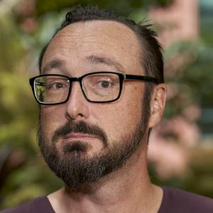
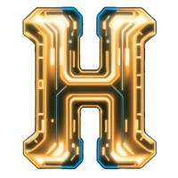
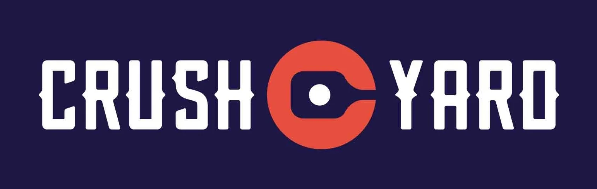

Mike Astle
Thirty years of getting the ones and zeroes in the right order.
I like to design the strategy and lead the teams behind great digital products. I've had success working at scales from startup to enterprise. I'm currently working to develop the strategy and practice of AI across org structures, product design, and software delivery.
Always happy to help entrepreneurs, especially those that are local to my home town of Charleston, SC, USA.
Current Projects
What I'm building, backing, and showing up for right now.
Consulting
NTS Consulting
Principal
Leading AI-driven consulting and development projects for a range of clients. Current projects include creating a standard for consumer-facing conversational interfaces for an international automotive OEM and building an AI-first electric vehicle (EV) challenger.
Medical Innovation
NeuroQuest
Chief Technology Officer
Building a HIPAA/CLIA-compliant platform integrating a novel analysis algorithm to establish Laboratory Information Management Systems (LIMS) to bring a new product to market that will make a real difference in customers' lives.

Community
CharlestonHacks
Board Member
Psyched to be working with a community-led organization that builds the tech ecosystem in Charleston through innovation-oriented events. Honored to MC a series of tech/creative Show & Tell events and weekend Hackathons.

Founding Team
Crush Yard
Special Tech Projects
I took the CTO role in the team that launched Crush Yard, a pickleball "eater-tainment" brand now active in Charleston, Orlando, and Nashville. I now contribute to new tech projects as Crush Yard continues to evolve.